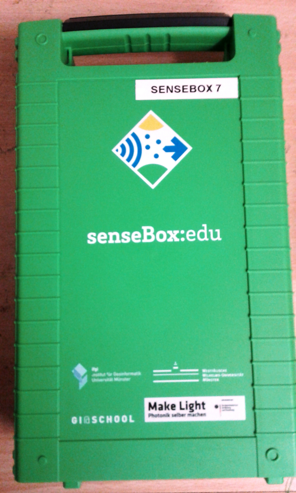

Objective
The objective is to measure the pendulum´s acceleration by using the accelerometer and further calculations
Apparatus:
The following list shows what you need for the advanced pendulum setup



Instruction
The first step is to attach the sensebox MCU to one end of the string. As the next step, you have to attach the other end of string to a suitable hanger. The hanger allows the pendulum to swing freely. Examples for a hanger are a hook, a screwdriver or a pen. The setup is now done. Raise the senseBox pendulum to one side and let it swing freely. Repeat it for several times. Allow the possible movement of the MCU in different directions (X,Y,Z)
Theoretically:
A simple pendulum can be considered to be a point mass suspended from a string or rod of negligible mass. For Length L and Period of oscillation T be related with Equation
T = 2√(L/g)
g = 4 π² L/T²
Calculate the average acceleration of gravity and place the result in the proper table. Compare this experimental value of g with the accepted value of 9.80 m/s and acceleration value from Accelerometer ( MCU sensor value).
Error Analysis: % error = (gavg m/s 2 - 9.80m/s 2 / 9.80 m/s 2 ) x 100 %
How it works?:
As the pendulum swings freely from different positions, it will in any case have some acceleration. The acceleration is measured by a 3-axis-accelerometer and is then visualized in this app
Further Questions you can think about
How to reduce the error ?
Would an other shape of the senseBox MCU change the measurements?
How does the acceleration of a pendulum change when its string length will be changed?
How would you design the Pendulum, so that you can control the pendulums acceleration in different dimensions (x,y,z)?
Result: Acceleration Measurement from Sensor:(X,Y,Z)
| X | Y | Z | a average | %Error |
|---|---|---|---|---|
| 2.9 | 3.89 | 9.5 | 5.43 | |
| 3.0 | 3.19 | 9.7 | 5.29 | |
| 2.95 | 3.91 | 9.9 | 5.59 | |
| 3.0 | 4.99 | 10.1 | 6.03 | |
| 3.5 | 5.71 | 10.5 | 6.57 |
MCU Pendulum: